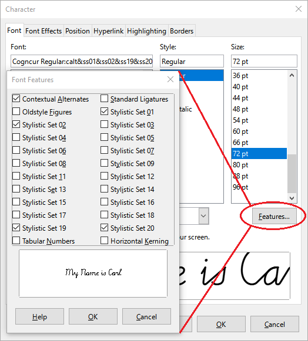

Cogncur Documentation - Customization
This guide shows you how you can customize the appearance of text in the Cogncur font family.
Topics:
Selecting stylistic sets
You customize Cogncur mainly by selecting stylistic sets. Stylistic sets are an OpenType feature and can be found together with other OpenType features in your application. In Microsoft Word, you find Stylistic Sets in the 'Advanced' tab of the Font Dialog. In LibreOffice Writer, you use the 'Font' tab in the Character Dialog, and then open the 'Features' popup.
Microsoft Word: stylistic sets

LibreOffice Writer: stylistic sets
A font can have up to 20 stylistic sets. By default, all stylistic sets are disabled. In most applications, you can enable each of these stylistic sets individually, so that you can end up with multiple stylistic sets enabled. In Microsoft Word, you can only enable one stylistic set at a time. [TODO: link to workaround]
In Cogncur, stylistic sets are mostly orthogonal to each other. It makes perfect sense to have multiple stylistic sets enabled simultaneously. Some letter variants will only appear if multiple stylistic sets are enabled.
Stylistic sets affecting lowercase letters
Entry strokes (ss01)
By default, Cogncur has entry strokes from the baseline. If you enable stylistic set ss01, you disable entry strokes from the baseline. Instead you'll get short entry strokes for most letters, and none at all for the letters a, c, d, g, o, q, and the variant t.
| Stylistic sets | Example text |
|---|
| none | a b c d e f g h i j k l m n
o p q r s t u v w x y z |
ss01 | a b c d e f g h i j k l m n
o p q r s t u v w x y z |
| Stylistic sets | Example text |
|---|
ss08 | t |
ss01, ss08 | t |
Exit strokes (ss02)
By default, Cogncur has exit strokes (‘monkey tails’) on all letters. The exit strokes on the letters s, p, and ß will disappear if you enable stylistic set ss02. If you use the print-like variant r with stylistic set ss02, its upwards exit stroke (towards the waist line) will disappear and the downward curve of the letter will be extended instead.
| Stylistic sets | Example text |
|---|
| none | kiss rap fuß |
ss02 | kiss rap fuß |
| Stylistic sets | Example text |
|---|
ss07 | err |
ss02, ss07 | err |
Shorter sticks (ss03)
By default, sticks below the baseline and above the waist line have the same length as loops. If you enable stylistic set ss03, sticks will be shorter: only 2/3 of the length of loops. This also applies to optional letter variants with sticks instead of loops. Not all combinations are shown in the tables below.
Exception: neither the default t nor the print-like variant of t are effected by stylistic set ss03.
| Stylistic sets | Example text |
|---|
| none | puddle |
ss03 | puddle |
| Stylistic sets | Example text |
|---|
| none | quaffle |
ss05 | quaffle |
ss03, ss05 | quaffle |
f and q (ss04, ss05)
By default, both f and q use a low loop to return to the baseline, and then join to the next letter from the baseline to the next letter. If you enable stylistic set ss04, f will join with a curved join from the point midway between the baseline and the waist line, while q will connect from the bottom of the stick. If you enable stylistic set ss05, both letters will use a pencil lift to return to the baseline and join the next letter from there. For f these stylistic sets interact: if you enable both of them, f will use a pencil lift to return to a point halfway between the baseline and waist line and join from there.
Furthermore, these stylistic sets also interact with stylistic set ss03 for shorter sticks. All possible variants for the letters f and q are shown in the table below. Variants that are repetitions have been grayed out.
| Stylistic sets | Example text |
|---|
| none | ff | qu |
ss04 | ff | qu |
ss05 | ff | qu |
ss04, ss05 | ff | qu |
ss03, ss04 | ff | qu |
ss03, ss05 | ff | qu |
ss03, ss04, ss05 | ff | qu |
In the Online Worksheetcreator, variants of f and q can be chosen independently from each other, with only the stick length (if applicable) applied to all letters. In the desktop fonts, settings for f and f had to have been combined due to the limit of 20 stylistic sets in total.
s (ss06)
By default, s has a slim form. From the top of the letter at the waist line, the pen goes ‘straight’ down (with ‘straight’ being defined by the slant of the font). By enabling stylistic set ss06 we can get a variant of s that has a ‘belly’. In that case, the implied slant of the letter can be found by drawing a straight line through both the top of the letter (where it touches the waist line) and through the lowest point (where it touches the baseline).
| Stylistic sets | Example text |
|---|
| none | kiss |
ss06 | kiss |
Slant of s with stylistic set ss06.
Print-like r (ss07)
r is one of those letters where traditionally, the cursive version is quite different from the print version. By default, Cogncur uses this traditional form. Since a more print-like form is also pretty common now, this can be enabled with stylistic set ss07. The print-like r interacts with stylistic set ss02 (less exit strokes), which will change the appearance of r at the end of the word.
| Stylistic sets | Example text |
|---|
| none | err |
ss07 | err |
ss02, ss07 | err |
Print-like t (ss08, ss09)
By default, the t in Cogncur is based on German and Dutch tradition. This form of the letter does not require any pencil lifts. The more common print-like t is also available through stylistic set ss08.
The sensible thing for print-like t would be to have the join curve into the vertical stick, creating an exception to Cogncur's principle that joins from the baseline have straight segments. Many Dutch curricula use a straight connection however. I've never been able to figure out this letter is supposed to be formed. Should the student, upon reaching the waist line with their pen, create an obtuse angle to continue the stroke upwards? I haven't seen obtuse angles in cursive anywhere, and even straight angles tend to become curves (compare the print capital E with the cursive letter E). Or should the student, when reaching the waist line, lift their pen and place it down at the top of the stick? That would create yet another pencil lift for the letter t. Neither seems solution seems satisfactory to me, but if you must, you can have print-like t with a straight join by enabling stylistic set ss09.
| Stylistic sets | Example text |
|---|
| none | toot |
ss08 | toot |
ss09 | toot |
t
Print-like t with straight connection
ss09
The top of r and z (ss11)
The letters r and z have the same ‘top’. By default, this ‘top’ has a wavy shape that starts with a curve against the waist line. When the stroke returns to the waist line for the second time, a sharp angle is used to transition to the down stroke (which is where r and z begin to differ from each other).
If you enable stylistic set ss11, the letters r and z start with an angle instead of a curve against the waist line. The uppercase letter Z is changed as well. The uppercase R and the print-like variant of r (ss07)) are not affected.
| Stylistic sets | Example text |
|---|
| none | r z Z |
ss11 | r z Z |
zero
Default top of r and z
zero
‘Pointy’ top of r and z
ss11
Teaching tip: some students struggle with the letters r and z, adding additional repetitions of the curve against the waist line or using a curve to transition into the downstroke. Using variants of r and z may help to prevent such problems. However, the student may also be confusing joins between letters with internal parts of the letters r and z. In that case, explicit teaching of joins and carefully distinguishing joins from the waist line and joins from the baseline may be more helpful than changing the appearance of the letters.
Use undercurves (ss12)
Straight segments in joins and entry strokes are a characteristic feature of Cogncur. So-called ‘undercurve’ joins have been crafted to support a print-like variant of t. These joins and entry strokes are technically capable of connecting to all letters that start with a sharp angle against the waist line, for example: i, u, j, etc. Joins and entry strokes towards a letter that starts with a curve against the waist line are not affected and retain their characteristic straight segment.
This setting is not recommended.
This setting interacts correctly with most settings that change the appearance of joins and exit strokes for specific letters. The exception is the variant of z enabled by stylistic set ss11; in that case, the setting interacts in an inconsistent manner, affecting the joins but not the entry stroke: zz.
| Stylistic sets | Example text |
|---|
| none | impunity |
ss12 | impunity |
| Stylistic sets | Example text |
|---|
ss11 | rr zz |
ss11, ss127 | rr zz |
y starts with an angle (ss13)
By default, the letter y starts with a curve against the waist line, like n. If you want a y that starts with a sharp angle from the waist line (like i), enable stylistic set ss13. If you disable entry strokes from the baseline (ss01), both versions of y will use a short entry stroke at the beginning of the word.
This setting also applies to the Dutch ligature for ij: ij becomes ij.
| Stylistic sets | Example text |
|---|
| none | yummy |
ss13 | yummy |
| Stylistic sets | Example text |
|---|
ss01 | yummy |
ss01, ss13 | yummy |
w starts with a curve (ss14)
By default, the letter w starts with an angle from the waist line, like u. If you want a w that starts with a curve against the waist line (like v), enable stylistic set ss14. If you disable entry strokes from the baseline (ss01), both versions of w will use a short entry stroke at the beginning of the word.
| Stylistic sets | Example text |
|---|
| none | wow |
ss14 | wow |
| Stylistic sets | Example text |
|---|
ss01 | wow |
ss01, ss14 | wow |
p (ss15, ss16)
By default, both f and p starts with an angle from the waist line, just like i. If you enable stylistic set ss15, p will start with a curve instead, just like the letter n. The default version of p has a closed loop; the join from p to the next letter is similar to the join from s to the next letter. If you enable stylistic set ss16, you'll get an open p instead, which joins to the next letter in the same way as n. The stick of all these variants of p can be shorted by enabling stylistic set ss03 for shorter sticks. The variants created by combining these three stylistic sets are shown in the table below. Although not shown in the table, the closed version of p is also affected by stylistic set ss02, which disables exit strokes for s and p.
| Stylistic sets | Example text |
|---|
| none | pup |
ss15 | pup |
ss16 | pup |
ss15, ss16 | pup |
| Stylistic sets | Example text |
|---|
ss03 | pup |
ss03, ss15 | pup |
ss03, ss16 | pup |
ss03, ss15, ss16 | pup |
Stylistic sets affecting uppercase letters
C, G and L don't start with a loop (ss19)
By default, the uppercase letters C, G and L start with a loop. If stylistic set ss19 is enabled, these letters will have a simpler shape, without a starting loop: C, G, L.
| Stylistic sets | Example text |
|---|
| none | Cc Gg Ll |
ss19 | Cc Gg Ll |
A, M and N look like their lowercase counterparts (ss20)
By default, the uppercase letters A, M and N look a lot like the print versions of these letters. If you enable stylistic set ss20, the letters will look like enlarged versions of their lowercase cursive counterparts: A, M, N. These enlargements are not exactly to scale; the shape and width have been modified. In the Online Worksheetcreator, there are also variants of these letters available that are enlarged exactly to scale.
| Stylistic sets | Example text |
|---|
| none | Aa Mm Nn |
ss20 | Aa Mm Nn |
| only in the worksheet-creater | Aa Mm Nn |